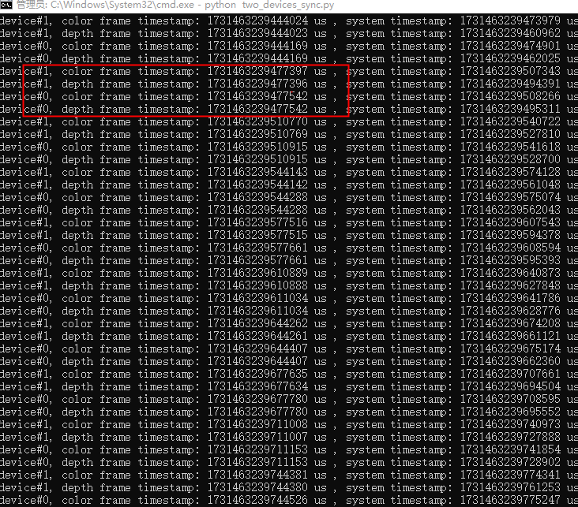

4.1. Create Device
There are multiple ways to obtain a Device. If your use case involves multiple devices, it is recommended to use Method 1, Method 2, or Method 3. If you are working with a single device, Method 4 is recommended for accessing the Device.
from pyorbbecsdk import *
# Create a Context
ctx = Context()
# Method 1
# Enumerate all connected devices through the Context.
device_list = ctx.query_devices()
# Get the device at index 0.
device = device_list.get_device_by_index(0)
# Method 2
# Enumerate all connected devices through the Context.
device_list = ctx.query_devices()
# Get the device by serial number.
device = device_list.get_device_by_serial_number("AE4M73D0040")
# Method 3
# Enumerate all connected devices through the Context.
device_list = ctx.query_devices()
# Get the device by uid.
device = device_list.get_device_by_uid("NDSG3958LKHY45")
# Method 4
pipeline = Pipeline()
# Get the device by pipeline.
device = pipeline.get_device()
4.2. Create Pipeline
There are two ways to create a Pipeline. If your use case involves multiple devices, use Method 2, which creates a separate Pipeline for each Device. For single-device scenarios, Method 1 is the most straightforward way to create a Pipeline.
from pyorbbecsdk import *
# Method 1
pipeline = Pipeline()
# Method 2，create with device
pipeline = Pipeline(device)
4.3. Obtain the Sensor List
Obtain the sensor list from the Device, and then obtain the supported sensor types from the sensor list.
from pyorbbecsdk import *
# 1.Create a pipeline with default device.
pipeline = Pipeline()
# 2.Get device with pipeline
device = pipeline.get_device()
# 3.Get the sensor list from device.
sensor_list = device.get_sensor_list()
# 4.Enable all available video streams
for sensor in range(len(sensor_list)):
sensor_type = sensor_list[sensor].get_type()
print(f"Enabling sensor type: {sensor_type}")
config.enable_stream(sensor_type)
4.4. Obtain Video Data Streams
Common data streams include Depth, Left IR, Right IR, and Color. Using the Depth stream as an example, the resolution is set to 640x400, the frame rate to 15 fps, and the output format to Y16. The handling of infrared and color streams follows a similar process.
The difference between Blocking Polling Mode and Asynchronous Callback Mode: In Blocking Polling Mode after frame aggregation in the pipeline, the frame is inserted into the queue, and the application obtain frame data from the queue by calling wait_for_frames. In Asynchronous Callback Mode, after frame aggregation, the frame is directly passed back to the application via a callback. The advantage of Asynchronous Callback Mode is that it is more real-time, but in the callback function, the application layer should avoid time-consuming tasks and should release the frame as soon as possible.
4.4.1. Blocking Polling Mode (Video Data Streams)
Key API Descriptions:
from pyorbbecsdk import *
# 1.Create a pipeline with default device.
pipeline = Pipeline()
# 2.Create config.
config = Config()
# 3.Enable video stream. You can modify the parameters based on your usage requirements
profile_list = pipeline.get_stream_profile_list(OBSensorType.DEPTH_SENSOR)
depth_profile = profile_list.get_video_stream_profile(640, 400, OBFormat.Y16, 15)
config.enable_stream(depth_profile)
# 4.Start the pipeline with config.
pipeline.start(config)
while True:
# 5.Wait for up to 100ms for a frameset in blocking mode.
frames = pipeline.wait_for_frames(100)
if frames is None:
continue
depth_frame = frames.get_depth_frame()
if depth_frame is None:
continue
depth_format = depth_frame.get_format()
if depth_format != OBFormat.Y16:
print("depth format is not Y16")
continue
width = depth_frame.get_width()
height = depth_frame.get_height()
scale = depth_frame.get_depth_scale()
depth_data = np.frombuffer(depth_frame.get_data(), dtype=np.uint16)
depth_data = depth_data.reshape((height, width))
depth_data = depth_data.astype(np.float32) * scale
depth_data = depth_data.astype(np.uint16)
depth_image = cv2.normalize(depth_data, None, 0, 255, cv2.NORM_MINMAX, dtype=cv2.CV_8U)
depth_image = cv2.applyColorMap(depth_image, cv2.COLORMAP_JET)
# 6.Stop the pipeline
pipeline.stop()
For detailed code, refer to: examples/depth.py.
4.4.2. Asynchronous Callback Mode (Video Data Streams)
Key API Descriptions:
from pyorbbecsdk import *
def on_new_frame_callback(frame: FrameSet):
"""Callback function to handle new frames"""
if frame is None:
return
depth_frame = frame.get_depth_frame()
if depth_frame is None:
return
depth_format = depth_frame.get_format()
if depth_format != OBFormat.Y16:
print("depth format is not Y16")
return
width = depth_frame.get_width()
height = depth_frame.get_height()
scale = depth_frame.get_depth_scale()
depth_data = np.frombuffer(depth_frame.get_data(), dtype=np.uint16)
depth_data = depth_data.reshape((height, width))
depth_data = depth_data.astype(np.float32) * scale
depth_data = depth_data.astype(np.uint16)
depth_image = cv2.normalize(depth_data, None, 0, 255, cv2.NORM_MINMAX, dtype=cv2.CV_8U)
depth_image = cv2.applyColorMap(depth_image, cv2.COLORMAP_JET)
def main():
# 1.Create a pipeline with default device.
pipeline = Pipeline()
# 2.Create config.
config = Config()
# 3.Enable video stream. You can modify the parameters based on your usage requirements
profile_list = pipeline.get_stream_profile_list(OBSensorType.DEPTH_SENSOR)
depth_profile = profile_list.get_video_stream_profile(640, 400, OBFormat.Y16, 15)
config.enable_stream(depth_profile)
# 4.Start the pipeline with config.
pipeline.start(config, lambda frames: on_new_frame_callback(frames))
# ...
# 5.Stop the pipeline
pipeLine.stop();
Note: The Gemini 330 series supports left IR and right IR sensors, with the IR sensor types being OBSensorType.LEFT_IR_SENSOR and OBSensorType.RIGHT_IR_SENSOR, respectively. The depth sensor type is OBSensorType.DEPTH_SENSOR, and the color sensor type is OBSensorType.COLOR_SENSOR
4.5. Obtain Imu Data Streams
4.5.1. Blocking Polling Mode (Imu Data Streams)
Key API Descriptions:
from pyorbbecsdk import *
# 1.Create a pipeline with default device.
pipeline = Pipeline()
# 2.Create config.
config = Config()
# 3.Enable Accel stream.
config.enable_accel_stream()
# 4.Enable Gyro stream.
config.enable_gyro_stream()
# 5.Start the pipeline with config.
pipeline.start(config);
while True:
# 6.Wait for up to 100ms for a frameset in blocking mode.
frames = pipeline.wait_for_frames(100)
if frames is None:
continue
accel_frame = frames.get_frame(OBFrameType.ACCEL_FRAME)
accel_frame = accel_frame.as_accel_frame()
gyro_frame = frames.get_frame(OBFrameType.GYRO_FRAME)
gyro_frame = gyro_frame.as_gyro_frame()
# 7.Stop the pipeline
pipeline.stop();
For detailed code, refer to: examples/imu.py.
4.5.2. Asynchronous Callback Mode (Imu Data Streams)
Key API Descriptions:
from pyorbbecsdk import *
def on_new_frame_callback(frame: FrameSet):
"""Callback function to handle new frames"""
if frame is None:
return
accel_frame = frame.get_frame(OBFrameType.ACCEL_FRAME)
accel_frame = accel_frame.as_accel_frame()
gyro_frame = frame.get_frame(OBFrameType.GYRO_FRAME)
gyro_frame = gyro_frame.as_gyro_frame()
def main():
# 1.Create a pipeline with default device.
pipeline = Pipeline()
# 2.Create config.
config = Config()
# 3.Enable Accel stream.
config.enable_accel_stream()
# 4.Enable Gyro stream.
config.enable_gyro_stream()
# 5.Start the pipeline with config.
pipeline.start(config, lambda frames: on_new_frame_callback(frames))
# ...
# 6.Stop the pipeline
pipeline.stop();
4.6. Obtain the Camera Intrinsic and Extrinsic Parameters
from pyorbbecsdk import *
pipeline = Pipeline()
profile_list = pipeline.get_stream_profile_list(OBSensorType.COLOR_SENSOR)
# Get color_profile
color_profile = profile_list.get_default_video_stream_profile()
profile_list = pipeline.get_stream_profile_list(OBSensorType.DEPTH_SENSOR)
# Get depth_profile
depth_profile = profile_list.get_default_video_stream_profile()
# Get external parameters
extrinsic = depth_profile.get_extrinsic_to(color_profile)
print("extrinsic {}".format(extrinsic))
# Get depth inernal parameters
depth_intrinsics = depth_profile.get_intrinsic()
print("depth_intrinsics {}".format(depth_intrinsics))
# Get depth distortion parameter
depth_distortion = depth_profile.get_distortion()
print("depth_distortion {}".format(depth_distortion))
# Get color internala parameters
color_intrinsics = color_profile.get_intrinsic()
print("color_intrinsics {}".format(color_intrinsics))
# Get color distortion parameter
color_distortion = color_profile.get_distortion()
print("color_distortion {}".format(color_distortion))
# Stop the pipeline
pipeline.stop()
4.7. Frame Aggregate
The frame aggregation feature is used to configure the output mode of frame data streams. This feature can be set through the interface provided by Config. There are four types of frame aggregation modes:
OBFrameAggregateOutputMode.FULL_FRAME_REQUIRE
Only FrameSets that contain all expected types of data frames will be output.
OBFrameAggregateOutputMode.COLOR_FRAME_REQUIRE
Color Frame Require output mode. Suitable for color streams using H264, H265, or other inter-frame encoding formats.
Note: In this mode, non-color frames in the FrameSet may be null.
OBFrameAggregateOutputMode.ANY_SITUATION
FrameSets will always be output regardless of completeness.
Note: Specific frame types may be null if not available.
OBFrameAggregateOutputMode.DISABLE
Disable frame aggregation. All types of frames are output independently.
For example, if Depth, Color, Left IR, and Right IR streams are all enabled and the frame aggregation mode is set to FULL_FRAME_REQUIRE, it means that the returned FrameSet will contain non-null frame data for all four streams. Sample code is shown below:
from pyorbbecsdk import *
# 1.Create a pipeline with default device.
pipeline = Pipeline()
# 2.Create config.
config = Config()
# 3.Enable depth video stream.
profile_list = pipeline.get_stream_profile_list(OBSensorType.DEPTH_SENSOR)
depth_profile = profile_list.get_default_video_stream_profile()
config.enable_stream(depth_profile)
# 4.Enable color video stream.
profile_list = pipeline.get_stream_profile_list(OBSensorType.COLOR_SENSOR)
color_profile = profile_list.get_default_video_stream_profile()
config.enable_stream(color_profile)
# 5.Enable left ir video stream.
left_profile_list = pipeline.get_stream_profile_list(OBSensorType.LEFT_IR_SENSOR)
left_ir_profile = left_profile_list.get_default_video_stream_profile()
config.enable_stream(left_ir_profile)
# 6.Enable right ir video stream.
right_profile_list = pipeline.get_stream_profile_list(OBSensorType.RIGHT_IR_SENSOR)
right_ir_profile = right_profile_list.get_default_video_stream_profile()
config.enable_stream(right_ir_profile)
# 7.Set the frame aggregate output mode to ensure all types of frames are included in the output frameset
config.set_frame_aggregate_output_mode(OBFrameAggregateOutputMode.FULL_FRAME_REQUIRE)
# 8.Start the pipeline with config.
pipeline.start(config)
while(true) {
# 9.Wait for up to 100ms for a frameset in blocking mode.
frames = pipeline.wait_for_frames(100)
if frames is None:
continue
# 10.Get all frames
color_frame = frames.get_color_frame()
depth_frame = frames.get_depth_frame()
left_ir_frame = frames.get_frame(OBFrameType.LEFT_IR_FRAME)
right_ir_frame = frames.get_frame(OBFrameType.RIGHT_IR_FRAME)
}
# 11.Stop the pipeline.
pipeline.stop();
For detailed code, refer to: examples/hdr.py.
4.8. D2C
D2C requires both Depth and Color streams to be enabled. The following section introduces Hardware D2C and Software D2C.
4.8.1. Hardware D2C
The key interface for hardware D2C is setting the D2C mode to hardware via Config, which enables the hardware D2C functionality.
config.set_align_mode(OBAlignMode.HW_MODE)
Key API Descriptions:
from pyorbbecsdk import *
def main():
# 1.Create a pipeline with default device.
pipeline = Pipeline()
# 2.Create config.
config = Config()
# 3.Get the list of color stream profiles
profile_list = pipeline.get_stream_profile_list(OBSensorType.COLOR_SENSOR)
# Iterate through the color stream profiles
for i in range(len(profile_list)):
color_profile = profile_list[i]
# Check if the color format is RGB
if color_profile.get_format() != OBFormat.RGB:
continue
# Get the list of hardware aligned depth-to-color profiles
hw_d2c_profile_list = pipeline.get_d2c_depth_profile_list(color_profile, OBAlignMode.HW_MODE)
if len(hw_d2c_profile_list) == 0:
continue
# Get the first hardware aligned depth-to-color profile
hw_d2c_profile = hw_d2c_profile_list[0]
print("hw_d2c_profile: ", hw_d2c_profile)
# 4.Enable the depth and color streams
config.enable_stream(hw_d2c_profile)
config.enable_stream(color_profile)
# 5.Set the alignment mode to hardware alignment
config.set_align_mode(OBAlignMode.HW_MODE)
break
else:
return
# 6.Start the pipeline
pipeline.start(config)
while True:
# 7.Wait for frames
frames = pipeline.wait_for_frames(100)
if frames is None:
continue
# Get the color and depth frames
color_frame = frames.get_color_frame()
depth_frame = frames.get_depth_frame()
# 8.Stop the pipeline
pipeline.stop()
For detailed code, refer to: examples/hw_d2c_align.py.
4.8.2. Software D2C
Software D2C can be implemented using synchronous or asynchronous methods. The synchronous method is described below.
Core Interface
align_filter = AlignFilter(align_to_stream=OBStreamType.COLOR_STREAM)
Key API Descriptions:
from pyorbbecsdk import *
def main():
# 1.Create a pipeline with default device.
pipeline = Pipeline()
# 2.Create config.
config = Config()
# 3.Enable color profile
profile_list = pipeline.get_stream_profile_list(OBSensorType.COLOR_SENSOR)
color_profile = profile_list.get_video_stream_profile(0, 0, OBFormat.RGB, 0)
config.enable_stream(color_profile)
# 4.Enable depth profile
profile_list = pipeline.get_stream_profile_list(OBSensorType.DEPTH_SENSOR)
depth_profile = profile_list.get_video_stream_profile(0, 0, OBFormat.Y16, 0)
config.enable_stream(depth_profile)
# 5.Set the frame aggregate output mode to ensure all types of frames are included in the output frameset
config.set_frame_aggregate_output_mode(OBFrameAggregateOutputMode.FULL_FRAME_REQUIRE)
# 6.Start the pipeline with config.
pipeline.start(config)
# 7.Create a filter to align depth frame to color frame
align_filter = AlignFilter(align_to_stream=OBStreamType.COLOR_STREAM)
while True:
# 8.Wait for frames
frames = pipeline.wait_for_frames(100)
if frames is None:
continue
# 9.Filter the data
frames = align_filter.process(frames)
if not frames:
continue
frames = frames.as_frame_set()
# Get the color and depth frames
color_frame = frames.get_color_frame()
depth_frame = frames.get_depth_frame()
# 10.Stop the pipeline
pipeline.stop()
4.9. Software C2D
Software C2D can be implemented using either synchronous or asynchronous methods. The synchronous method is described below.
Core Interface
align_filter = AlignFilter(align_to_stream=OBStreamType.DEPTH_STREAM)
Key API Descriptions:
from pyorbbecsdk import *
def main():
# 1.Create a pipeline with default device.
pipeline = Pipeline()
# 2.Create config.
config = Config()
# 3.Enable color profile
profile_list = pipeline.get_stream_profile_list(OBSensorType.COLOR_SENSOR)
color_profile = profile_list.get_video_stream_profile(0, 0, OBFormat.RGB, 0)
config.enable_stream(color_profile)
# 4.Enable depth profile
profile_list = pipeline.get_stream_profile_list(OBSensorType.DEPTH_SENSOR)
depth_profile = profile_list.get_video_stream_profile(0, 0, OBFormat.Y16, 0)
config.enable_stream(depth_profile)
# 5.Set the frame aggregate output mode to ensure all types of frames are included in the output frameset
config.set_frame_aggregate_output_mode(OBFrameAggregateOutputMode.FULL_FRAME_REQUIRE)
# 6.Start the pipeline with config.
pipeline.start(config)
# 7.Create a filter to align color frame to depth frame
align_filter = AlignFilter(align_to_stream=OBStreamType.DEPTH_STREAM)
while True:
# 8.Wait for frames
frames = pipeline.wait_for_frames(100)
if frames is None:
continue
# 9.Filter the data
frames = align_filter.process(frames)
if not frames:
continue
frames = frames.as_frame_set()
# Get the color and depth frames
color_frame = frames.get_color_frame()
depth_frame = frames.get_depth_frame()
# 10.Stop the pipeline
pipeline.stop()
For detailed code, refer to: examples/sync_align.py.
4.10. Depth Point Cloud
The SDK provides PointCloudFilter, for processing depth data and generating point clouds.
Key API Description:
from pyorbbecsdk import *
import os
save_points_dir = os.path.join(os.getcwd(), "point_clouds")
if not os.path.exists(save_points_dir):
os.mkdir(save_points_dir)
def main():
# 1.Create a pipeline with default device.
pipeline = Pipeline()
# 2.Create config.
config = Config()
# 3.Enable depth profile
profile_list = pipeline.get_stream_profile_list(OBSensorType.DEPTH_SENSOR)
depth_profile = profile_list.get_video_stream_profile(0, 0, OBFormat.Y16, 0)
config.enable_stream(depth_profile)
# 4.Start the stream
pipeline.start(config)
# 5.Create point cloud filter
point_cloud_filter = PointCloudFilter()
point_cloud_filter.set_create_point_format(OBFormat.POINT)
while True:
# 6.Wait for frames
frames = pipeline.wait_for_frames(100)
if frames is None:
continue
# 7.Apply the point cloud filter
point_cloud_frame = point_cloud_filter.process(frames)
# 8.save point cloud
save_point_cloud_to_ply(os.path.join(save_points_dir, "depth_point_cloud.ply"), point_cloud_frame)
break
# 9.Stop the pipeline
pipeline.stop()
4.11. RGBD Point Cloud
RGBD point clouds can be generated using the SDK by acquiring both depth and color data streams, and then processing them with PointCloudFilter.
Key API Description:
from pyorbbecsdk import *
import os
save_points_dir = os.path.join(os.getcwd(), "point_clouds")
if not os.path.exists(save_points_dir):
os.mkdir(save_points_dir)
def main():
# 1.Create a pipeline with default device.
pipeline = Pipeline()
# 2.Create config.
config = Config()
# 3.Enable color profile
profile_list = pipeline.get_stream_profile_list(OBSensorType.COLOR_SENSOR)
color_profile = profile_list.get_video_stream_profile(0, 0, OBFormat.RGB, 0)
config.enable_stream(color_profile)
# 4.Enable depth profile
profile_list = pipeline.get_stream_profile_list(OBSensorType.DEPTH_SENSOR)
depth_profile = profile_list.get_video_stream_profile(0, 0, OBFormat.Y16, 0)
config.enable_stream(depth_profile)
# 5.Set the frame aggregate output mode to ensure all types of frames are included in the output frameset
config.set_frame_aggregate_output_mode(OBFrameAggregateOutputMode.FULL_FRAME_REQUIRE)
# 6.Start the stream
pipeline.enable_frame_sync()
pipeline.start(config)
# 7.Create point cloud filter
point_cloud_filter = PointCloudFilter()
# 8.Create a filter to align depth frame to color frame
align_filter = AlignFilter(align_to_stream=OBStreamType.COLOR_STREAM)
point_cloud_filter.set_create_point_format(OBFormat.RGB_POINT)
while True:
# 9.Wait for frames
frames = pipeline.wait_for_frames(100)
if frames is None:
continue
# 10.Filter the data
align_frame = align_filter.process(frames)
if not align_frame:
continue
# 11.Apply the point cloud filter
point_cloud_frame = point_cloud_filter.process(align_frame)
# 12.save point cloud
save_point_cloud_to_ply(os.path.join(save_points_dir, "rgb_point_cloud.ply"), point_cloud_frame)
break
# 13.Stop the pipeline
pipeline.stop()
4.12. Noise Removeal Filter
4.12.1. Hardware Noise Removeal Filter
Hardware Noise Removeal Filter reduces depth noise through on-device processing.
Currently, this feature is supported only on the Gemini 330 series (firmware version 1.4.60 and above).
When hardware filtering is enabled, it’s recommended to disable software denoising filters to reduce CPU usage.
Key API Description:
# 1.Get device by Pipeline
device = pipeline.get_device()
if device.is_property_supported(OBPropertyID.OB_PROP_HW_NOISE_REMOVE_FILTER_ENABLE_BOOL, OBPermissionType.PERMISSION_WRITE):
# 2.enable hardware noise removal filter.
device.set_bool_property(OBPropertyID.OB_PROP_HW_NOISE_REMOVE_FILTER_ENABLE_BOOL, True)
# 3.Adjust the threshold for hardware noise removal filter.
device.set_float_property(OBPropertyID.OB_PROP_HW_NOISE_REMOVE_FILTER_THRESHOLD_FLOAT, 0.2)
4.13. Depth Post-Processing Filters
The SDK provides a recommended list of post-processing filters,For details on how to use the post-processing filter list interface,see examples/post_processing.py.
from pyorbbecsdk import *
# 1.Create a pipeline with default device.
pipeline = Pipeline()
# 2.Get device with pipeline
device = pipeline.get_device()
# 3.Get depth sensor
depth_sensor = device.get_sensor(OBSensorType.DEPTH_SENSOR)
# 4.Get a list of post-processing filtering recommendations
filter_list = depth_sensor.get_recommended_filters()
# 5.Apply the recommended filters to the depth frame
for i, post_filter in enumerate(filter_list):
if post_filter.is_enabled():
# Only apply enabled filters
new_depth_frame = post_filter.process(new_depth_frame)
4.14. Recording and Playback
4.14.1. Recording
Data stream recording is primarily implemented using RecordDevice.
Key API Description:
from pyorbbecsdk import *
# 1.Prompt the user to enter the output filename (.bag) and wait for input to start recording
file_path = input("Enter output filename (.bag) and press Enter to start recording: ")
# 2.Create a pipeline with default device.
pipeline = Pipeline()
# 3.Get device with pipeline
device = pipeline.get_device()
# 4.Get the list of playback sensors
sensor_list = device.get_sensor_list()
# 5.enable the data streams for playback
for sensor in range(len(sensor_list)):
sensor_type = sensor_list[sensor].get_type()
if sensor_type in video_sensors:
config.enable_stream(sensor_type)
# 6.Initialize recording device with output file
recorder = RecordDevice(device, file_path)
# 7.Start record
recorder.resume()
# 8.Stop record
recorder.pause()
For detailed code, refer to: examples/recorder.py.
4.14.2. Playback
Data stream playback is primarily implemented using PlaybackDevice.
Key API Description:
from pyorbbecsdk import *
# 1.Get valid .bag
file_path = input("Enter output filename (.bag) and press Enter to start playbacking: ")
# 2.Create a playback device with a .bag file
playback = PlaybackDevice(file_path)
# 3.Create a pipeline with the playback device
pipeline = Pipeline(playback)
# 4.Get the default config
config = Config()
# 5.Set playback status change callback, when the playback stops, start the pipeline again with the same config
def on_status_change(status):
print(f"[Callback] status changed: {status}")
if status == PlaybackStatus.Stopped:
pipeline.stop()
pipeline.start(config)
playback.set_playback_status_change_callback(on_status_change)
# 6.Get the list of playback sensors
sensor_list = device.get_sensor_list()
# 7.enable the data streams for playback
for sensor in range(len(sensor_list)):
sensor_type = sensor_list[sensor].get_type()
if sensor_type in video_sensors:
config.enable_stream(sensor_type)
# 8.Start the pipeline with the config
pipeline.start(config)
while True:
# 9.Get all frames
frames = pipeline.wait_for_frames(100)
if not frames:
continue
# Process color image
color_frame = frames.get_frame(OBFrameType.COLOR_FRAME)
# 10.Stop the pipeline.
pipeline.stop()
playback = None
For detailed code, refer to: examples/playback.py.
4.15. Firmware Update
Users can develop firmware update functionality for RGBD cameras as needed. The following demonstrates how to update the firmware of a single RGBD camera, with a corresponding workflow diagram provided.
Key API Description：
from pyorbbecsdk import *
def firmware_update_callback(state, message, percent):
# 5.Firmware upgrade status callback
print(f"Progress: {percent}%")
print(f"Status : {state}")
print(f"Message : {message}\n")
def main():
# 1.Create a context to access the connected devices
context = Context()
# 2.Get connected devices from the context
device_list = context.query_devices()
# 3.Get the first device.
device = device_list[0]
# 4.Set async to false to synchronously block and wait for the device firmware upgrade to complete.
device.update_firmware(firmware_path, firmware_update_callback, async_update=False)
# ...
# 6.Reboot the device after a successful update.
device.reboot();
Note: Femto Mega series devices cannot be used
For detailed code, refer to: examples/device_firmware_update.py.
4.16. Update Preset
You can update optional depth presets for a device by using the update_optional_depth_presets API.
Define a Callback Function for Update Progress You can define a callback function to monitor the firmware update progress. This function is called automatically each time the device reports an update status.
from pyorbbecsdk import *
# Callback function to display update progress
def preset_update_callback(first_call, state, message, percent):
print(f"Progress: {percent}%")
print(f"Status : {state}")
print(f"Message : {message}\n", end='')
After selecting a device, update its presets by calling the update_optional_depth_presets function with the specified callback.
from pyorbbecsdk import *
# 1.Create a context to access the connected devices
context = Context()
# 2.Get connected devices from the context
device_list = context.query_devices()
# 3.Get the first device.
device = device_list[0]
# 4.update its presets by calling the update_optional_depth_presets function with the specified callback
device.update_optional_depth_presets(
preset_paths,
lambda state, message, percent: preset_update_callback(True, state, message, percent)
)
Note: The API supports upgrading multiple presets at once. For G300 series devices, a maximum of 3 presets can be written at a time. The first preset written will be set as the default preset.
For detailed code, refer to: examples/device_optional_depth_presets_update.py.
4.17. Device Disconnection and Reconnection
The SDK provides a device connection change listener that helps you handle situations where a device is unexpectedly disconnected and automatically recover when it is reconnected.
from pyorbbecsdk import *
def on_device_changed_callback(disconn_device_list: DeviceList, conn_device_list: DeviceList):
"""Handles device changes by invoking appropriate connect/disconnect callbacks."""
on_device_connected_callback(conn_device_list)
on_device_disconnected_callback(disconn_device_list)
def main():
# 1.create context
ctx = Context()
# 2.register device callback
ctx.set_device_changed_callback(on_device_changed_callback)
In the Context callback on_device_changed_callback:
disconn_device_list contains devices that the SDK has detected as disconnected (offline).
conn_device_list contains devices that the SDK has detected as connected (online).
For detailed code, refer to: examples/hot_plug.py.
4.18. Commonly Used Interfaces
4.18.1. Device Reboot
from pyorbbecsdk import *
context = Context()
device_list = context.query_devices()
#get device
device = device_list.get_device_by_index(0)
#reboot device
device.reboot()
4.18.2. Obtain the Serial Number
from pyorbbecsdk import *
context = Context()
device_list = context.query_devices()
device = device_list.get_device_by_index(0)
device_info = device.get_device_info()
# get device serial number
serial_number = device_info.get_serial_number()
4.18.3. Stream Profile
Method 1: obtain stream profile by resolution, frame format, and frame rate
from pyorbbecsdk import *
pipeline = Pipeline()
# Obtain color profile through resolution, frame format and frame rate. A resolution width and height of 0 indicates wildcard characters
color_profile_list = pipeline.get_stream_profile_list(OBSensorType.COLOR_SENSOR)
color_profile= color_profile_list.get_video_stream_profile(640, 0, OBFormat.RGB, 30)
# Get depth profile through resolution, frame format and frame rate, resolution width and height are 0 to indicate wildcard characters
depth_profile_list = pipeline.get_stream_profile_list(OBSensorType.DEPTH_SENSOR)
depth_profile = depth_profile_list.get_video_stream_profile(640, 0, OBFormat.Y16, 30)
Method 2: Obtain the default stream profile
from pyorbbecsdk import *
pipeline = Pipeline()
depth_profile_list =
pipeline.get_stream_profile_list(OBSensorType.DEPTH_SENSOR)
# Obtain the default depth profile. The default resolution can be configured by using the OrbbecSDKConfig_v1.0.xml
depth_profile = depth_profile_list.get_default_video_stream_profile()
Method 3: Obtain stream profile through video frames
from pyorbbecsdk import *
pipeline = Pipeline()
pipeline.start(config)
frames = pipeline.wait_for_frames(100)
depth_frame = frames.get_depth_frame()
depth_frame = depth_frame.as_video_frame()
#Get depth profile
depth_profile = depth_frame.get_stream_profile()
4.18.4. Obtain IMU StreamProfile
Obtain IMU StreamProfile from IMU frame
frames = pipeline.wait_for_frames(100)
# Get the accel stream profile
accel_frame_raw = frames.get_frame(OBFrameType.ACCEL_FRAME)
accel_stream_profile = accel_frame_raw.get_stream_profile()
# Get the gyro stream profile
gyro_frame_raw = frames.get_frame(OBFrameType.GYRO_FRAME)
gyro_stream_profile = gyro_frame_raw.get_stream_profile()
4.18.5. Obtain Intrinsic and Extrinsic Parameters
Intrinsic and extrinsic parameters can be obtained via the StreamProfile.
# Get the depth intrinsic
depth_intrinsic = depth_profile.get_intrinsic()
depth_distortion = depth_profile.get_distortion()
# Get the color intrinsic
color_intrinsic = color_profile.get_intrinsic()
color_distortion = color_profile.get_distortion()
# Get the depth to color extrinsic
depth_to_colorExtrinsic = depth_profile.get_extrinsic_to(color_profile)
4.18.6. Obtain IMU Intrinsic Parameters
frames = pipeline.wait_for_frames(100)
# Get the accel stream profile
accel_frame_raw = frames.get_frame(OBFrameType.ACCEL_FRAME)
accel_stream_profile = accel_frame_raw.get_stream_profile()
# Get the accel stream intrinsic
accel_intrinsic = accel_stream_profile.get_intrinsic()
# Get the gyro stream profile
gyro_frame_raw = frames.get_frame(OBFrameType.GYRO_FRAME)
gyro_stream_profile = gyro_frame_raw.get_stream_profile()
# Get the gyro stream intrinsic
gyro_intrinsic = gyro_stream_profile.get_intrinsic()
4.18.7. LDP Switch
The LDP (Laser Distance Protection) module is capable of detecting objects in close proximity. When LDP is enabled, the system detects obstacles within the specified distance range of the camera and gradually reduces the laser power level until the laser is switched off, ensuring laser protection. This functionality is disabled when LDP is disabled.
from pyorbbecsdk import *
#True：turn on LDP，False：turn off LDP
device.set_bool_property(OBPropertyID.OB_PROP_LDP_BOOL, True)
4.18.8. Obtain LDP Measurement Value
To obtain the LDP (Laser Distance Protection) measurement values when the LDP switch is enabled.
distance = device.get_int_property(OBPropertyID.OB_PROP_LDP_MEASURE_DISTANCE_INT)
4.18.9. Obtain LDP Protection Status
ldp_status = device.get_bool_property(OBPropertyID.OB_PROP_LDP_STATUS_BOOL)
4.18.10. Laser Switch
The command to turn the laser on or off for the Gemini 330 is as follows：
# Gemini 330 series Laser control, 0: off, 1: on, 2: auto
device.set_bool_property(OBPropertyID.OB_PROP_LASER_CONTROL_INT, laser)
For devices other than the Gemini 330, the command to turn the laser on or off is as follows：
device.set_bool_property(OBPropertyID.OB_PROP_LASER_BOOL, True)
4.18.11. Obtain MetaData
MetaData can be obtained from the returned Frame objects. Supported frame types include depth, leftIR, rightIR, and color.
frame_set = pipeline.wait_for_frames(1000)
# Example of using color frame
frame = frames.get_color_frame()
if frame.has_metadata(EXPOSURE):
metadata_value = frame.get_metadata_value(EXPOSURE)
For detailed code, refer to: examples/metadata.py.
4.18.12. Triggered Capture
4.18.12.1. Software Triggered Capture
pipeline = Pipeline()
device = pipeline.get_device()
# First, configure the device to software trigger mode through the Device.
sync_config = device.get_multi_device_sync_config()
sync_config.mode = OBMultiDeviceSyncMode.SOFTWARE_TRIGGERING
device.set_multi_device_sync_config(sync_config)
# Finally, after starting the video stream, capture the data stream through the interface provided by the Device.
device.trigger_capture()
For detailed code, refer to: examples/two_devices_sync.py.
4.18.13. Timestamp Reset
Timestamp Reset Command
This command is used in multi-device synchronization scenarios and only needs to be sent to the master device. Resetting the timestamp on the master device is sufficient, as it can be configured to output a reset signal to reset the slave devices.
device.set_bool_property(OBPropertyID.OB_PROP_TIMER_RESET_SIGNAL_BOOL, True)
TimeStamp Reset Trigger Out enable
Enabling this option allows the timestamp reset signal to be sent to slave devices for resetting.
# true: Indicates that the trigger signal is sent externally; false: Indicates that the trigger signal is not sent externally.
device.set_bool_property(OBPropertyID.OB_PROP_TIMER_RESET_TRIGGER_OUT_ENABLE_BOOL, True)
Reset Signal Delay
Defines how long to delay the reset after receiving the trigger signal. This can be used in master-slave sync scenarios to avoid laser interference.
# The delay time is in microseconds (us), for example, setting it to 20 means 20 microseconds.
device.set_int_property(OBPropertyID.OB_PROP_TIMER_RESET_DELAY_US_INT, 20)
Enable Timestamp Reset
For Gemini 330 series and Gemini 2 series devices, you can directly use the above three interfaces without calling an additional enable command. However, for Femto Mega series devices, you must first call the timestamp reset enable interface before using the timestamp reset functionality and the three interfaces above.
# true: Indicates that the timestamp reset function is enabled.
device.set_bool_property(OBPropertyID.OB_PROP_TIMER_RESET_ENABLE_BOOL, True)
4.18.14. Device Time Synchronization
Device Timing: set the host time to the device.
To synchronize a single device, you would need to periodically invoke a time synchronization function, such as calling it once every 1 minutes.
from pyorbbecsdk import *
pipeline = Pipeline()
device = pipeline.get_device()
device.timer_sync_with_host()
To synchronize multiple devices, the parameter “repeatInterval” represents the synchronization interval in milliseconds (ms). For example, to synchronize every one minute, the repeatInterval would be set to 60 * 1000 (ms).
from pyorbbecsdk import *
context = Context()
# Parameter: The interval for auto-repeated synchronization, in milliseconds. If the value is 0, synchronization is performed only once.
context.enable_multi_device_sync(60000)
4.18.15. D2D (Disparity to depth)
Disparity to depth is an image processing technique used to convert disparity information into depth information.
4.18.15.1. Hardware D2D
Hardware D2D refers to disparity-to-depth conversion implemented internally within the device. Devices such as the Gemini 330 series, Gemini 2, Gemini 2 L, Astra 2 support this feature.
from pyorbbecsdk import *
pipeline = Pipeline()
device = pipeline.get_device()
# Parameters: True to turn on hardware D2D, False to turn off hardware D2D
device.set_bool_property(OBPropertyID.OB_PROP_DISPARITY_TO_DEPTH_BOOL,True)
4.18.15.2. Software D2D
Software D2D refers to disparity-to-depth conversion implemented within the SDK. All devices support Software D2D except for TOF devices like Femto Mega and Femto Bolt.
from pyorbbecsdk import *
pipeline = Pipeline()
device = pipeline.get_device()
# Parameters: True to turn on Software D2D, False to turn off Software D2D
device.set_bool_property(OBPropertyID.OB_PROP_SDK_DISPARITY_TO_DEPTH_BOOL,True)
4.18.16. Depth Settings
4.18.16.1. Depth Working Mode
from pyorbbecsdk import *
pipeline = Pipeline()
device = pipeline.get_device()
# Find the depth work mode name through the list
depth_work_mode_list = device.get_depth_work_mode_list()
select_depth_work_mode = depth_work_mode_list.get_depth_work_mode_by_index(index)
# Set depth work mode
device.set_depth_work_mode(select_depth_work_mode.name)
Note: Setting the Depth mode must be set before start the stream.
4.18.16.2. Preset Configuration
Gemini 330 series 3D cameras have built-in a variety of predefined Presets. For the specific application scenarios of 3D cameras, users can use the Orbbec Viewer tool to select the best Presets.
The method of loading the preset is as follows:
from pyorbbecsdk import *
pipeline = Pipeline()
device = pipeline.get_device()
# Get preset name through the list
preset_list = device.get_available_preset_list()
preset_name = preset_list[index]
# Set preset
device.load_preset(preset_name)
4.18.16.3. Set Depth AE
Set the Depth for automatic exposure.Set Depth AE is equivalent to set IR AE.
# True open depth AE， False: close depth AE
device.set_bool_property(OBPropertyID.OB_PROP_DEPTH_AUTO_EXPOSURE_BOOL, True)
4.18.16.4. Set Depth Exposure
Set Depth exposure, prerequisites, you need to turn off the Depth AE. Set Depth exposure is equivalent to set IR exposure.
# Diable AE
device.set_bool_property(OBPropertyID.OB_PROP_DEPTH_AUTO_EXPOSURE_BOOL, False)
# Set exposure
device.set_int_property(OBPropertyID.OB_PROP_DEPTH_EXPOSURE_INT, 1000)
4.18.16.5. Set Depth Gain
To set the exposure for Depth, you need to turn off the Depth AE. Set Depth gain is equivalent to set IR Gain.
# Diable AE
device.set_bool_property(OBPropertyID.OB_PROP_DEPTH_AUTO_EXPOSURE_BOOL, False)
# Set depth gain
device.set_int_property(OBPropertyID.OB_PROP_DEPTH_GAIN_INT, 64)
4.18.16.6. Set Depth Mirror
Depth mirror refers to horizontally flipping the depth image along its vertical centerline, meaning the pixel positions on the left and right sides of the image are swapped.
if device.is_property_supported(OBPropertyID.OB_PROP_DEPTH_MIRROR_BOOL, OBPermissionType.PERMISSION_READ):
# Obtain the current mirror
is_open = device.get_bool_property(OBPropertyID.OB_PROP_DEPTH_MIRROR_BOOL)
if device.is_property_supported(OBPropertyID.OB_PROP_DEPTH_MIRROR_BOOL, OBPermissionType.PERMISSION_WRITE):
device.set_bool_property(OBPropertyID.OB_PROP_DEPTH_MIRROR_BOOL, not is_open)
4.18.16.7. Set Depth Flip
Depth Flip means flipping the depth image up and down along the X-axis, that is, swapping the upper and lower parts of the image.
if device.is_property_supported(OBPropertyID.OB_PROP_DEPTH_FLIP_BOOL, OBPermissionType.PERMISSION_WRITE):
# true: depth is flipped up and down; false: Does not flip
device.set_bool_property(OBPropertyID.OB_PROP_DEPTH_FLIP_BOOL, True)
4.18.16.8. Set Depth Rotation
Depth rotation can be rotated at 0, 90, 180, and 270 degrees. The default rotation is set to 0 degrees.
Rotation parameters:
OBRotateDegreeType.ROTATE_0
OBRotateDegreeType.ROTATE_90
OBRotateDegreeType.ROTATE_180
OBRotateDegreeType.ROTATE_270
if device.is_property_supported(OBPropertyID.OB_PROP_DEPTH_ROTATE_INT, OBPermissionType.PERMISSION_WRITE):
# Set the rotation angle.
device.set_int_property(OBPropertyID.OB_PROP_DEPTH_ROTATE_INT, OBRotateDegreeType.ROTATE_90)
4.18.16.9. Set the Unit of Depth
The precision of depth measurements is determined by the unit of pixel values in the depth data frame. By adjusting the depth unit, the accuracy of depth measurements can be modified. For instance, if the unit is set to 0.2mm, an object at a distance of 1000mm will have a pixel value of 5000 in the output depth data frame (as 5000 multiplied by 0.2mm equals 1000mm). Similarly, if the unit is set to 0.1mm, the pixel value will be 10000.
Gemini 2/2L, Astra 2,Gemini 330 series support the setting of Depth units. Gemini 2/2L sets the Depth unit as follows:
Among them:
OBDepthPrecisionLevel.ONE_MM： 1mm
OBDepthPrecisionLevel.ZERO_POINT_EIGHT_MM：0.8mm
OBDepthPrecisionLevel.ZERO_POINT_FOUR_MM: 0.4mm
OBDepthPrecisionLevel.ZERO_POINT_TWO_MM: 0.2mm
OBDepthPrecisionLevel.ZERO_POINT_ONE_MM: 0.1mm
from pyorbbecsdk import *
pipeline = Pipeline()
device = pipeline.get_device()
device.set_int_property(OBPropertyID.OB_PROP_DEPTH_PRECISION_LEVEL_INT, OBDepthPrecisionLevel.ONE_MM)
The Gemini 330 series supports setting the Depth unit as follows:
from pyorbbecsdk import *
pipeline = Pipeline()
device = pipeline.get_device()
device.set_float_property(OBPropertyID.OB_PROP_DEPTH_UNIT_FLEXIBLE_ADJUSTMENT_FLOAT, 0.1)
Notes: The Gemini 330 series Depth unit supports setting arbitrary units, with the parameter as a float.
4.18.16.10. Set Min and Max Depth
Set the min and max values of Depth, and all Depth outside this range will be set to 0.
For devices other than the Gemini 330 series, the method to set the max and min depth values is as follows:
from pyorbbecsdk import *
pipeline = Pipeline()
device = pipeline.get_device()
# Set the min Depth value, and the Depth less than the modified value will be set to 0,Unit: mm
device.set_int_property(OBPropertyID.OB_PROP_MIN_DEPTH_INT , 100)
# Set the max Depth value, the Depth greater than the modified value will be set to 0, unit mm
device.set_int_property(OBPropertyID.OB_PROP_MAX_DEPTH_INT , 1000)
For the Gemini 330 series, max and min depth values are set through post-processing with the ThresholdFilter, as follows:
from pyorbbecsdk import *
# create threshold filter
threshold_filter = ThresholdFilter()
# set min and max depth,unit: mm
threshold_filter.set_value_range(100,1000)
# get depth frame
frames = pipeline.wait_for_frames(100)
depth_frame = frames.get_depth_frame()
# call threshold filter
new_depth_frame = threshold_filter.process(depth_frame)
depth_frame = new_depth_frame.as_depth_frame()
4.18.17. IR Parameter Settings
4.18.17.1. Set IR AE
Set the IR for automatic exposure.
# True open IR AE， False: close IR AE
device.set_bool_property(OBPropertyID.OB_PROP_IR_AUTO_EXPOSURE_BOOL, True)
4.18.17.2. Set IR Exposure
Exposure settings only take effect when AE is disabled
# Disable AE
device.set_bool_property(OBPropertyID.OB_PROP_IR_AUTO_EXPOSURE_BOOL, False)
# set exposure
device.set_int_property(OBPropertyID.OB_PROP_IR_EXPOSURE_INT, 1000)
4.18.17.3. Set IR Gain
Gain settings only take effect when AE is disabled
# Disable AE
device.set_bool_property(OBPropertyID.OB_PROP_IR_AUTO_EXPOSURE_BOOL, False)
# Set gain. gain: the specific gain value
device.set_int_property(OBPropertyID.OB_PROP_IR_GAIN_INT, gain)
4.18.17.4. Set IR Target Brightness
Used during auto exposure to define the target brightness
device.set_int_property(OBPropertyID.OB_PROP_IR_BRIGHTNESS_INT, 60)
4.18.17.5. Set IR Maximum Exposure Value
Used during auto exposure to define the max exposure
device.set_int_property(OBPropertyID.OB_PROP_IR_AE_MAX_EXPOSURE_INT, 3000)
4.18.17.6. set IR Mirror
IR mirror refers to horizontally flipping the IR image along its vertical centerline, meaning the pixel positions on the left and right sides of the image are swapped.
if device.is_property_supported(OBPropertyID.OB_PROP_IR_MIRROR_BOOL, OBPermissionType.PERMISSION_READ):
# Obtain the current mirror
isOpen = device.get_bool_property(OBPropertyID.OB_PROP_IR_MIRROR_BOOL)
if device.is_property_supported(OBPropertyID.OB_PROP_IR_MIRROR_BOOL, OBPermissionType.PERMISSION_WRITE):
device.set_bool_property(OBPropertyID.OB_PROP_IR_MIRROR_BOOL, not isOpen)
4.18.17.7. Set IR Flip
IR Flip means flipping the IR image up and down along the X-axis, that is, swapping the upper and lower parts of the image.
if device.is_property_supported(OBPropertyID.OB_PROP_IR_FLIP_BOOL, OBPermissionType.PERMISSION_WRITE):
# true: IR is flipped up and down; false: Does not flip
device.set_bool_property(OBPropertyID.OB_PROP_IR_FLIP_BOOL, True)
4.18.17.8. Set IR Rotation
IR rotation can be rotated at 0, 90, 180, and 270 degrees. The default rotation is set to 0 degrees.
Rotation parameters:
OBRotateDegreeType.ROTATE_0
OBRotateDegreeType.ROTATE_90
OBRotateDegreeType.ROTATE_180
OBRotateDegreeType.ROTATE_270
if device.is_property_supported(OBPropertyID.OB_PROP_IR_ROTATE_INT, OBPermissionType.PERMISSION_WRITE):
# Set the rotation angle
device.set_int_property(OBPropertyID.OB_PROP_IR_ROTATE_INT, OBRotateDegreeType.ROTATE_90)
4.18.18. Color Parameter Settings
4.18.18.1. Set Color AE
Set the Color for automatic exposure.
from pyorbbecsdk import *
pipeline = Pipeline()
device = pipeline.get_device()
#True open color AE， False: close color AE
device.set_bool_property(OBPropertyID.OB_PROP_COLOR_AUTO_EXPOSURE_BOOL, True)
4.18.18.2. Set Color Exposure
Set Color exposure, prerequisites, you need to turn off the Color AE
#True open color AE， False: close color AE
device.set_bool_property(OBPropertyID.OB_PROP_COLOR_AUTO_EXPOSURE_BOOL, True)
#set exposure
device.set_int_property(OBPropertyID.OB_PROP_COLOR_EXPOSURE_INT, 1000)
4.18.18.3. Set Color Gain
Set the Color gain and prerequisites. You need to turn off the Color AE
#True open color AE， False: close color AE
device.set_bool_property(OBPropertyID.OB_PROP_COLOR_AUTO_EXPOSURE_BOOL, True)
#Set color gain. gain: the specific gain value
device.set_int_property(OBPropertyID.OB_PROP_COLOR_GAIN_INT, gain)
4.18.18.4. set Color Mirror
Color mirror refers to horizontally flipping the Color image along its vertical centerline, meaning the pixel positions on the left and right sides of the image are swapped.
if device.is_property_supported(OBPropertyID.OB_PROP_COLOR_MIRROR_BOOL, OBPermissionType.PERMISSION_READ):
# Set the Color mirror
isOpen = device.get_bool_property(OBPropertyID.OB_PROP_COLOR_MIRROR_BOOL)
if device.is_property_supported(OBPropertyID.OB_PROP_COLOR_MIRROR_BOOL, OBPermissionType.PERMISSION_WRITE):
# Parameter: true mirror, false non-mirror
device.set_bool_property(OBPropertyID.OB_PROP_COLOR_MIRROR_BOOL, not isOpen)
4.18.18.5. Set Color Flip
Color Flip means flipping the Color image up and down along the X-axis, that is, swapping the upper and lower parts of the image.
if device.is_property_supported(OBPropertyID.OB_PROP_COLOR_FLIP_BOOL, OBPermissionType.PERMISSION_WRITE):
# true: indicates that the data is flipped up and down. false: indicates that the data is not flipped.
device.set_bool_property(OBPropertyID.OB_PROP_COLOR_FLIP_BOOL, True)
4.18.18.6. Set Color Rotation
Color rotation can be rotated at 0, 90, 180, and 270 degrees. The default rotation is set to 0 degrees.
Rotation parameters:
OBRotateDegreeType.ROTATE_0
OBRotateDegreeType.ROTATE_90
OBRotateDegreeType.ROTATE_180
OBRotateDegreeType.ROTATE_270
if device.is_property_supported(OBPropertyID.OB_PROP_COLOR_ROTATE_INT, OBPermissionType.PERMISSION_WRITE):
# Set the rotation angle
device.set_int_property(OBPropertyID.OB_PROP_COLOR_ROTATE_INT, OBRotateDegreeType.ROTATE_90)
4.18.18.7. Set Color Automatic White Balance (AWB)
from pyorbbecsdk import *
pipeline = Pipeline()
device = pipeline.get_device()
#True: Turn on Auto White Balance，False: Turn off Auto White Balance
device.set_bool_property(OBPropertyID.OB_PROP_COLOR_AUTO_WHITE_BALANCE_BOOL, True)
4.18.18.8. Set Color White Balance Parameters
To set the white balance parameter, you must turn off automatic white balance first.
from pyorbbecsdk import *
pipeline = Pipeline()
device = pipeline.get_device()
device.set_bool_property(OBPropertyID.OB_PROP_COLOR_AUTO_WHITE_BALANCE_BOOL, False)
device.set_int_property(OBPropertyID.OB_PROP_COLOR_WHITE_BALANCE_INT, 5000)
4.18.18.9. Set the Color Brightness
device.set_int_property(OBPropertyID.OB_PROP_COLOR_BRIGHTNESS_INT, brightness)
4.18.18.10. Set Color Sharpness
device.set_int_property(OBPropertyID.OB_PROP_COLOR_SHARPNESS_INT, sharpness)
4.18.18.11. Set Color Gamma
device.set_int_property(OBPropertyID.OB_PROP_COLOR_GAMMA_INT, gamma)
4.18.18.12. Set Color Saturation
device.set_int_property(OBPropertyID.OB_PROP_COLOR_SATURATION_INT, saturation)
4.18.18.13. Set Color Hue
device.set_int_property(OBPropertyID.OB_PROP_COLOR_HUE_INT, hue)
4.18.18.14. Set Color Auto Exposure Priority
device.set_int_property(OBPropertyID.OB_PROP_COLOR_AUTO_EXPOSURE_PRIORITY_INT, 1)
4.18.18.15. Set Color Backlight Compensation
device.set_int_property(OBPropertyID.OB_PROP_COLOR_BACKLIGHT_COMPENSATION_INT, 1)
4.18.18.16. Set Color Contrast
device.set_int_property(OBPropertyID.OB_PROP_COLOR_CONTRAST_INT, contrast)
4.18.18.17. Set Color Power Line Frequency
It is necessary to set 50Hz or 60Hz according to the power line frequency of different countries and regions. The purpose of setting the power supply frequency is to prevent Color images from flickering.
from pyorbbecsdk import *
pipeline = Pipeline()
device = pipeline.get_device()
device.set_int_property(OBPropertyID.OB_PROP_COLOR_POWER_LINE_FREQUENCY_INT, OBPowerLineFreqMode.FREQUENCY_50HZ)
Remarks:
OBPowerLineFreqMode.FREQUENCY_50HZ ：50HZ
OBPowerLineFreqMode.FREQUENCY_60HZ ：60HZ
OBPowerLineFreqMode.FREQUENCY_CLOSE ：Close
4.18.19. Multi-Camera Synchronization
4.18.19.1. Multi-Camera Synchronous Hardware Connection
4.18.19.2. Multi-Camera Synchronization Software Configuration
First, modify the configuration file (multi_device_sync_config.json), modify the serial number of the Primary Device and Secondary Device, if you need to configure other parameters, please refer to the multi-camera sync document
{
"devices": [
{
"serial_number": "CP3S34D00051",
"config": {
"mode": "PRIMARY",
"depth_delay_us": 0,
"color_delay_us": 0,
"trigger_to_image_delay_us": 0,
"trigger_out_enable": true,
"trigger_out_delay_us": 0,
"frames_per_trigger": 1
}
},
{
"serial_number": "CP3L44P00054",
"config": {
"mode": "SECONDARY",
"depth_delay_us": 0,
"color_delay_us": 0,
"trigger_to_image_delay_us": 0,
"trigger_out_enable": true,
"trigger_out_delay_us": 0,
"frames_per_trigger": 1
}
}
]
}
Multi-device synchronization Sample, please refer to examples/two_devices_sync.py, if you need to synchronize more than 2 devices, it is recommended to use C++.
#1. read sync param from json config，and set multi device sync params
device.set_multi_device_sync_config(sync_config)
#2. start the data stream for each device
start_streams(pipelines, configs)
#3. Synchronize the device time
ctx.enable_multi_device_sync(60000)
#4. print serial number and timestamp，Determine synchronization effect by timestamps
if color_frame is not None:
print(f"device#{i}, color frame timestamp: {color_frame.get_timestamp_us()} us , system timestamp: {color_frame.get_system_timestamp_us()} us")
if depth_frame is not None:
print(f"device#{i}, depth frame timestamp: {depth_frame.get_timestamp_us()} us , system timestamp: {depth_frame.get_system_timestamp_us()} us")
Running results: We use the timestamps of the Primary and Secondary printed by Sample to determine if they are synchronized on.
